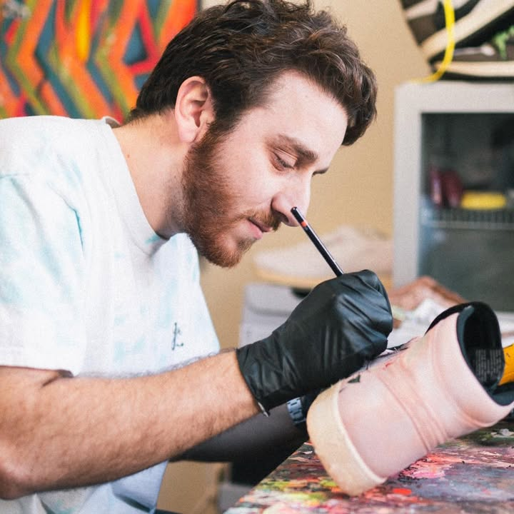
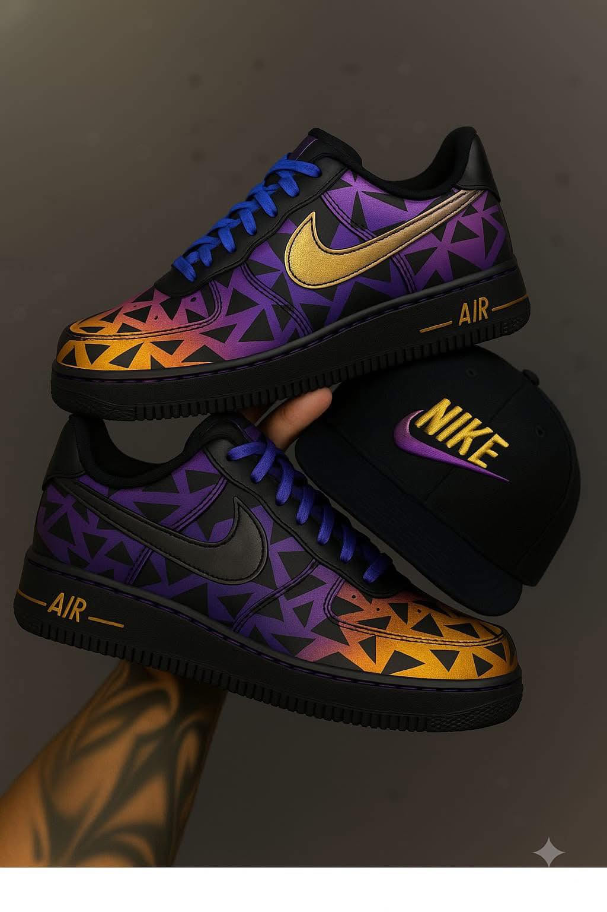
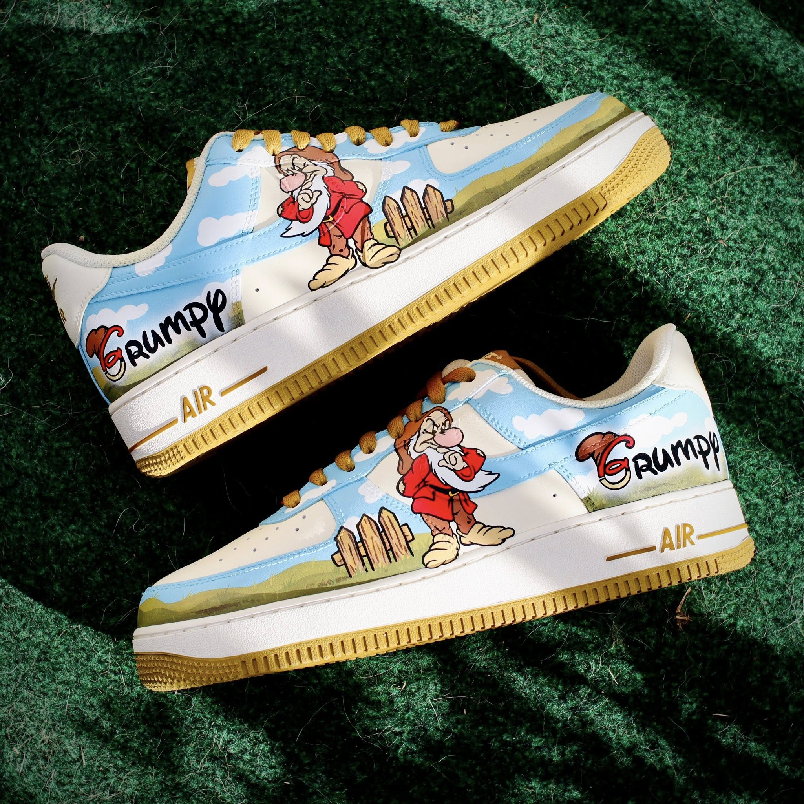
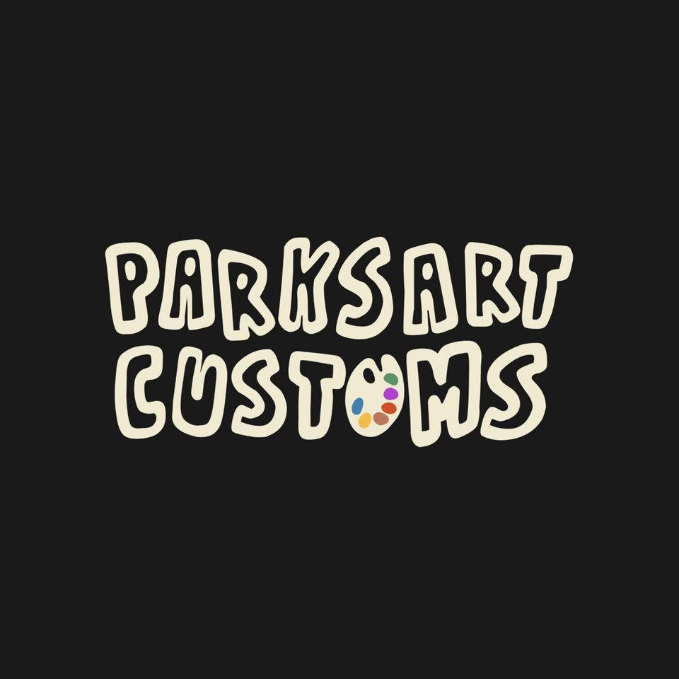
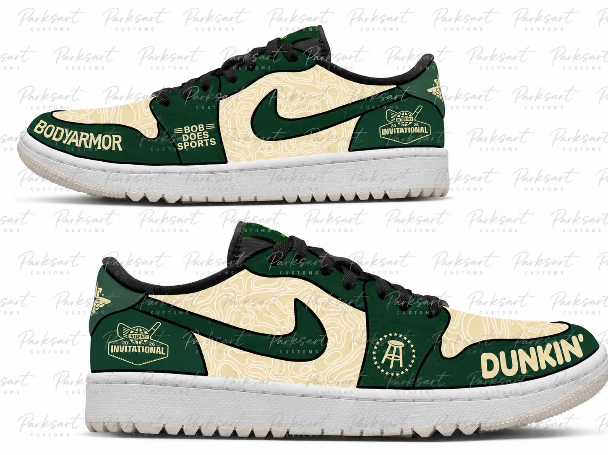
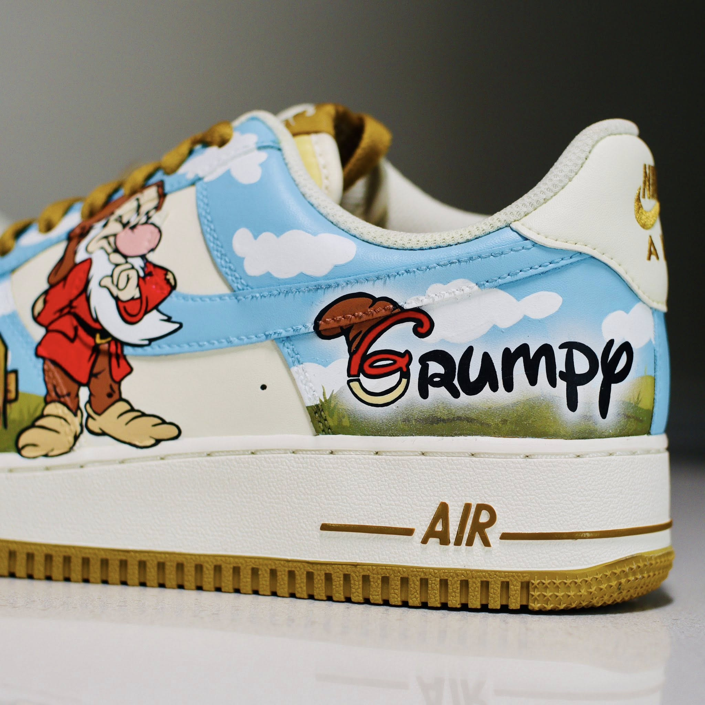
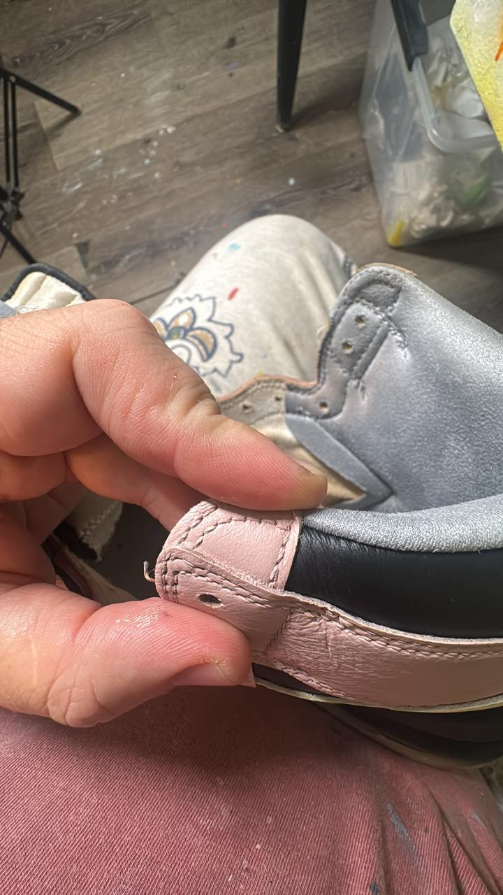

Your shoes should carry a memory, a culture, and a moment nobody else can repeat.
The emotional angle is transformation: from blank mass-produced sneakers to a personal icon people ask about the second they see it.
Greenville, NC custom sneaker atelier
Parker Joseph Ellis turns blank pairs into one-of-one art pieces shaped by hip-hop culture, Carolina roots, and a process 92K+ followers watch because the craft is the show.







Brand positioning
Parksart Customs positions each pair as a premium artifact: freehand, emotionally specific, and built around the buyer’s story with Parker’s taste as the filter.
The emotional angle is transformation: from blank mass-produced sneakers to a personal icon people ask about the second they see it.
No template marketplace. No clip-art finish. Parker’s eye, brushwork, and storytelling lead the piece.
Premium without sounding distant; culture-literate without trying too hard.
The opportunity
Parksart Customs already has the hardest part: attention, trust, and a recognizable creator voice. The website turns Facebook discovery into a controlled buyer journey with pricing context, qualification, email capture, and SEO for people searching for North Carolina sneaker artists.
Every commission CTA routes to the waitlist so Parker is no longer dependent on platform DMs.
Package tiers and application language frame custom sneakers as art, not commodity add-ons.
Drops, B2B activations, and workshops become visible paths instead of hidden possibilities.
Commission paths
Simple offers reduce DM friction while still letting each pair stay deeply personal.
One-of-one sneaker art for collectors, athletes, artists, and gift buyers who want a wearable centerpiece.
Best for personal commissionsPriority consideration for upcoming commission windows, limited pairs, and early drop access.
Best for demand captureLive customization, branded pairs, and culture-first activations for teams, boutiques, festivals, and agencies.
Best for brands and eventsPortfolio system
Instead of a flat gallery, each case-study card spotlights the reason people already follow: reveal, transformation, and Parker’s freehand decisions.
A premium case study template for showing inspiration, sketch, paint passes, reveal, and final fit photos.
Before to after
The website makes the hidden journey visible: hesitation becomes confidence, a blank pair becomes a conversation piece, and a Facebook follower becomes an owned-audience collector.
The buyer likes the work but has to guess pricing, timing, fit, and whether their idea belongs.
The buyer understands the lanes, submits context, joins the list, and sees the commission as premium.
Future revenue engine
Commission work stays exclusive, while timed drops convert passive followers into buyers and email subscribers with clear scarcity and release storytelling.
Hand-painted night-game palette, reflective accents, and individually numbered packaging.
Get early accessHow it works
Share the story, shoe size, budget range, deadline, and whether you need sourcing.
Parker translates the idea into a direction that fits the shoe, culture, and client.
The freehand process becomes content, proof, and anticipation before the final reveal.
The finished pair ships with care notes and a story buyers can share immediately.
Why buyers trust it
Trust builders
Strategic FAQs reduce DM back-and-forth while keeping the experience personal, selective, and premium.
You can provide a new pair or request sourcing guidance. The waitlist form captures size, model, and deadline context.
Every pair is freehand and story-led. Parker interprets the idea so the final result feels intentional, not overstuffed.
Complexity, shoe model, deadline, sourcing, and commercial usage all matter. The form qualifies the right lane first.
Yes. Events, live customization, branded pairs, and culture-first launches are routed through the B2B lane.
Final frame
Apply for the next commission window, get early access to drops, or start a culture-first event conversation.
Start the requestCommission waitlist
This form qualifies demand, captures email, and gives Parker the project context needed to choose the right commissions.
From Facebook to flagship
Real social media images now drive the visual story.
Public Facebook assets become an owned-site gallery: process, finished pairs, logo moments, and detail shots that make the commission journey feel tangible.